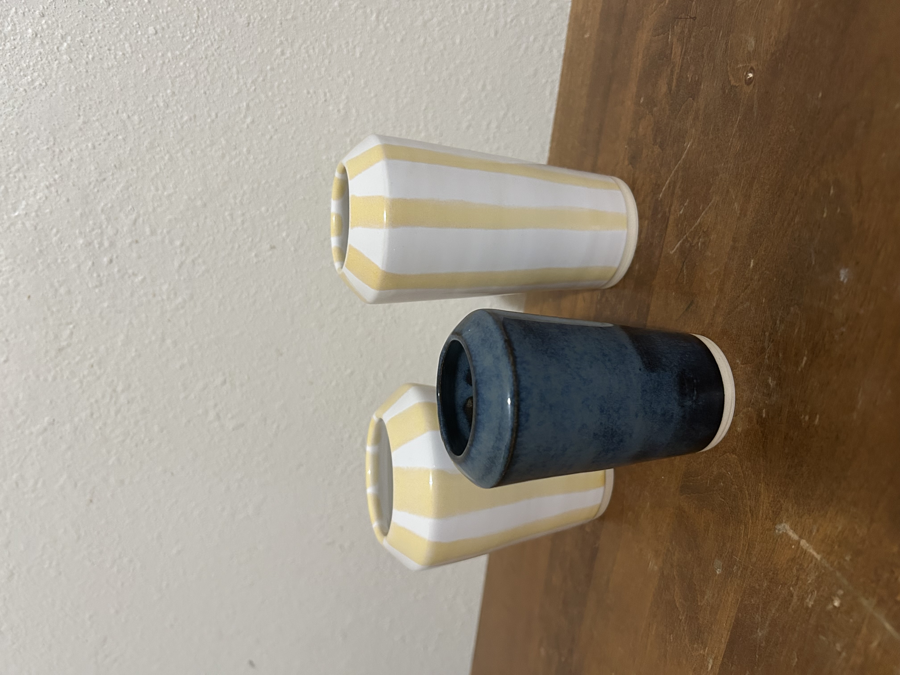
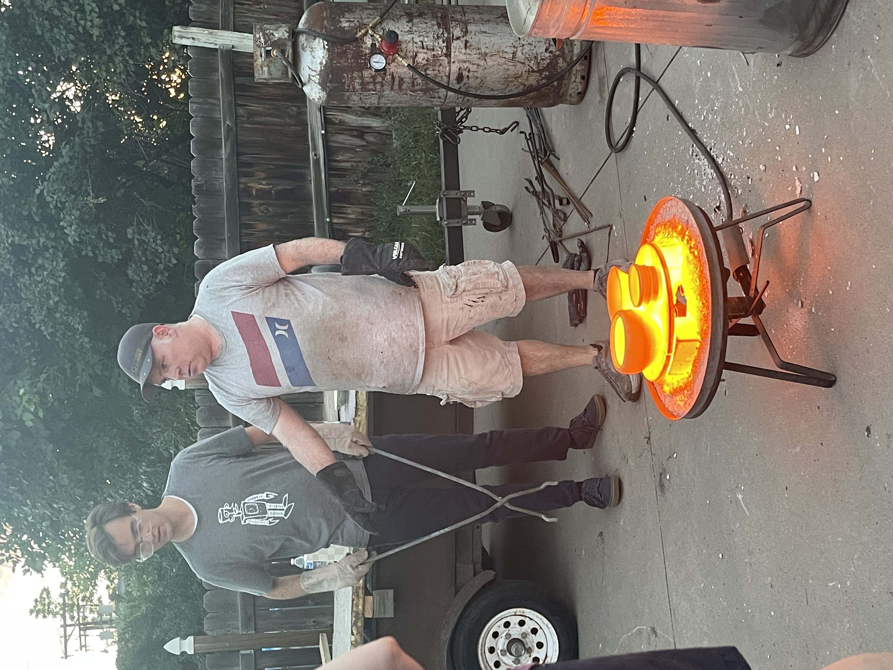

Pottery
One of my hobbies is doing pottery.
It is a very relaxing activity that allows me to express my creativity.
In this section, I will share my most recent piece of pottery which was made using the Raku firing technique. Raku is a Japanese pottery technique that involves removing the pottery from the kiln while it is still glowing hot and placing it in combustible materials to create unique surface effects.
Here is a picture of red hot pottery ready to be removed:
Here is the final product:

Here is a video that shows how raku firing is done:
Here are the steps to making Raku pottery:
- Make the pottery
- Shape the clay
- Let it dry to leather-hard
- Trim and refine the shape
- Bisque fire the piece
- Glaze the pottery
- Choose a raku glaze suitable for your clay body
- Apply glaze evenly to the bisque-fired piece
- Let the glaze dry completely
- Clean the bottom of the piece to prevent sticking in the kiln
- Fire the pottery
- Place the glazed pottery in a raku kiln.
- Heat the kiln rapidly to around 1800°F (982°C).
- Monitor the glaze until it reaches maturity (shiny and melted).
- Using tongs, carefully remove the hot pottery from the kiln.
- Place the piece into a container with combustible materials (like sawdust or newspaper).
- Cover the container to create a reduction atmosphere, affecting the glaze colors.
- Allow the pottery to cool before cleaning off soot and residue.
- Clean the pottery
- Remove the pottery from the reduction chamber once cool.
- Scrub off soot and residue with a brush or abrasive pad.
- Rinse with water to reveal the final glaze effects.
- Allow the piece to dry completely before use or display.
Back to top